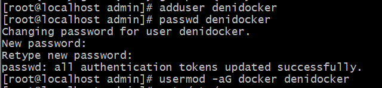
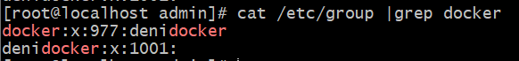

Linux post-installation steps for Docker Engine
These optional post-installation procedures shows you how to configure your Linux host machine to work better with Docker.Manage Docker as a non-root user
The Docker daemon binds to a Unix socket, not a TCP port. By default it’s the root user that owns the Unix socket, and other users can only access it using sudo. The Docker daemon always runs as the root user.
If you don’t want to preface the docker command with sudo, create a Unix group called docker and add users to it. When the Docker daemon starts, it creates a Unix socket accessible by members of the docker group. On some Linux distributions, the system automatically creates this group when installing Docker Engine using a package manager. In that case, there is no need for you to manually create the group.
To create the docker group and add your user:1. Create the docker group.

2. Add your user to the docker group.

3. Log out and log back in so that your group membership is re-evaluated.
If you’re running Linux in a virtual machine, it may be necessary to restart the virtual machine for changes to take effect. You can also run the following command to activate the changes to groups: